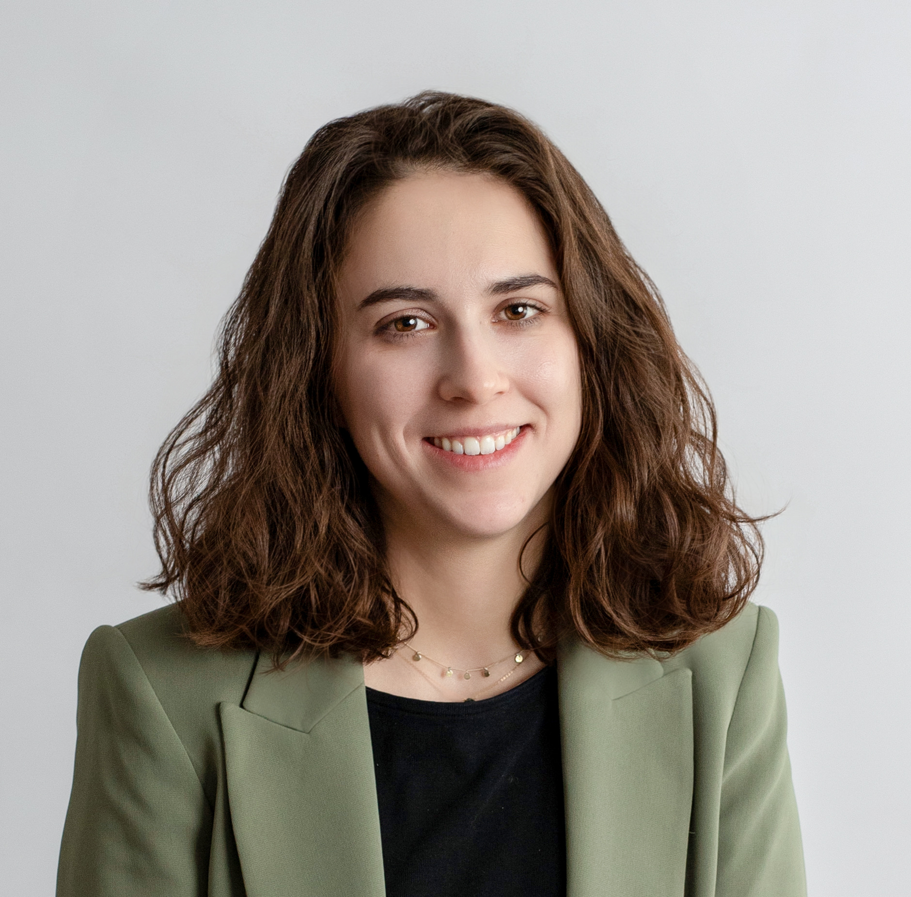

Carmen Amo Alonso is an Assistant Professor (incoming 2027) in EECS at UC Berkeley, where she leads the Control and Intelligent Systems Lab. Her research lies at the intersection of control theory, optimization, and artificial intelligence (AI) with a focus on the principled design of reliable and controllable AI technologies. Carmen's work seeks to adapt mathematical principles from control theory, traditionally used to ensure safety and predictability in engineered systems, to understand, control, and ultimately improve the behavior of AI systems, including generative models for language applications and embodied systems. The impact of her research has led to various collaborations with industry, including Google and Apple.
Prior to joining UC Berkeley, she was a Schmidt Science Fellow at Stanford University, where she was named an Emerson Consequential Scholar and an Impacts Lab Fellow for the potential of her research to positively impact society. Before Stanford, she was a Fellow at the Artificial Intelligence Center at ETH Zurich. Carmen earned her Ph.D. in Control and Dynamical Systems from Caltech in 2023, where she was advised by Prof. John Doyle. Her thesis was awarded the Milton and Francis Clauser Doctoral Prize, which recognizes the best Ph.D. dissertation of the year across all disciplines at Caltech. During her Ph.D., her research received two IEEE best paper awards, was partially funded by Amazon and D. E. Shaw fellowships, and earned her three Rising Star titles (EECS, Cyber-Physical Systems, and Brain and Cognitive Sciences). She holds a M.Sc. in Space Engineering by Caltech (2017) and a B.Sc. in Aerospace Engineering by the Technical University of Madrid (2016).
Besides her research collaborations across academia and industry, Carmen is committed to education for all. As a member of Clubes de Ciencia, she travels to South America in the summer to teach underserved students.